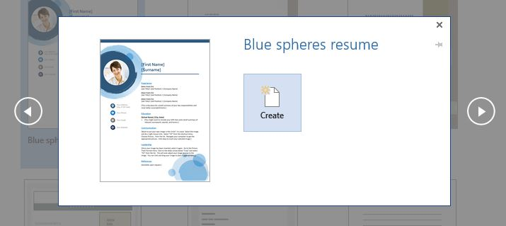
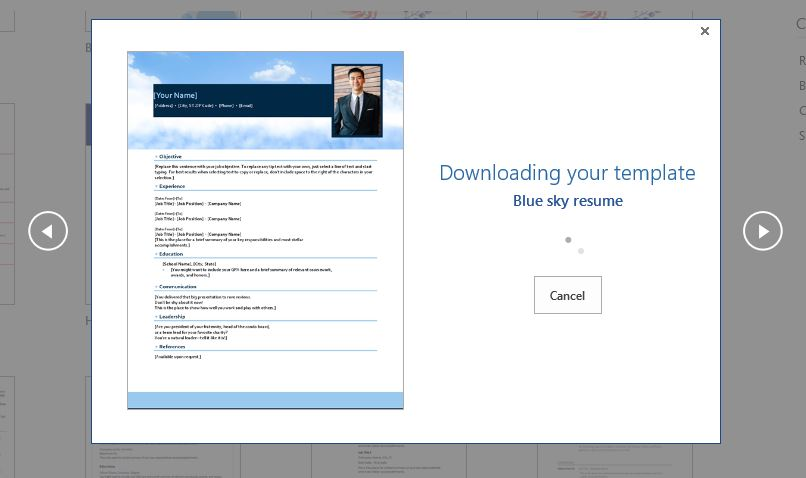

Cara Membuat CV Dengan Mudah Menggunakan Microsoft Word

Curriculum vitae merupakan daftar riwayat hidup yang berisi data dan informasi yang diperlukan untuk melamar pekerjaan. Dalam CV terdapat informasi seperti pendidikan, keahlian, biodata, dan riwayat pekerjaan lainnya.
Kamu pun perlu membuat CV semenarik mungkin agar mendapat penilailan yang tinggi dari rekrutmen. Menggunakan bahasa Inggris dalam CV bisa menjadi satu di antaranya.
Menggunakan Bahasa Inggris juga menandakan kamu memiliki kepercayaan diri yang tinggi. Istilahnya, berani beda dari yang lain.
Selain pekerjaan kantoran, banyak juga pekerjaan sampingan yang bisa kamu dapatkan dengan CV yang tertata rapih. Contohnya saja menjadi penulis lepas, atau agen asuransi yang bisa bantu kamu mendapatkan penghasilan tambahan sampai jutaan per bulan.
Nah, dalam ulasan kali ini, OHHGITU ingin berbagi informasi nih mengenai cara membuat salah satu dokumen untuk melamar pekerjaan yang menarik. Sebab, untuk memenangkan persaingan kerja, butuh persiapan benar-benar matang, termasuk mempersiapkan CV.
Berikut cara Membuat CV Menggunakan Microsoft Word
Cara membuat CV di Word sekarang jadi lebih mudah. Namun, tergantung dari software Microsoft Word yang kamu gunakan lho ya. Pastikan Word yang kamu gunakan adalah Microsoft Word 2013. Lalu, gimana cara membuat CV di Word 2013?
1. Menggunakan Template Bawaan
Microsoft Word telah menyediakan beberapa template CV. Namun, desainnya berbeda-beda, tergantung versi Word yang kamu gunakan. Langkah penggunaannya adalah sebagai berikut.
- Buka Microsoft Word anda lalu pilih menu file
- pilih sub-menu New
- Pilih Template CV
- Pilih salah satu template lalu pilih Create 
- Edit teks sesuai informasi dirimu


Jika menggunakan Word 2007, klik Installed Template. Dalam Word 2010, kamu bisa mengklik menu Sample Templates. Apabila menggunakan Word 2011, klik New From Template. Sementara itu, pada Word 2013 kamu akan langsung menemukan template CV.
2. Download Template Lainnya
Jika template yang disediakan oleh Microsoft Word tidak ada yang cocok dengan seleramu, maka kamu bisa download template baru dengan mudah dan praktis. Template bawaan Microsoft Word memang terbatas. Namun, jika belum menemukan template yang cocok, tenang saja. Berikut cara membuat dan men-download template CV di Word :
- Pastikan komputermu terhubung dengan internet
- klik menu File dan pilih sub-menu New
- Ketik “CV” atau “resume” pada kotak bertuliskan Search for online templates. Kamu juga bisa menggunakan kata kunci lain yang menurutmu lebih sesuai. Kemudian klik Enter.
- Pilih template yang anda inginkan lalu klik download 
- Edit CV sesuai data pribadi kamu

Selesai